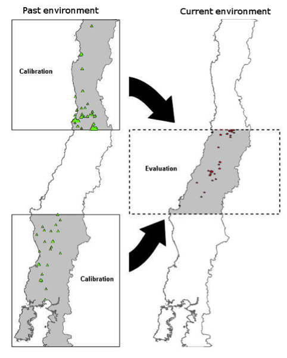
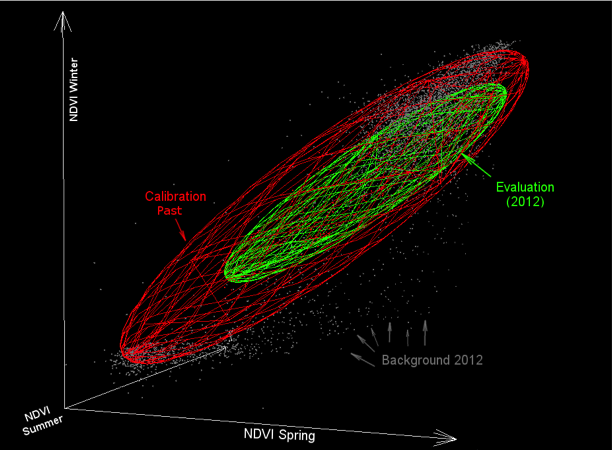

Move a niche definition (an ellipsoid definition) from one scenario to another.
There is a growing interest in using ENM to look for patterns of niche conservatism among different environmental scenarios. Here we show a case study in which we calibrated the model in a past environment, and then we projected the model to current environments for evaluation. To increase the independence in our model, we use different geographic areas of central Chile for each case (Fig. 1). In this case, we used vegetation indexes (NDVI) from past and current scenarios as environmental variables, but climatic data could also be used. We employed MaxEnt as the modeling algorithm, transferring the model (no clamping, no extrapolation) from the past environments and geographic area to the present environmental scenario and area (Fig. 1).

NicheA makes it possible for the first time to visualize niche model transferences from different environmental scenarios in a 3D space (Fig. 2). First, we generated an ENM for our target species calibrating the model in specific areas with past environments and occurrences. Then, we made a second ENM using current environments and occurrences, but in a different geographic area (Fig. 1). Both models (past and present) were displayed under the same environmental scenario. As our environmental scenario (background) we used the current environments (year 2012), the model from the past occurrences and environment (year 2002) were fitted on the current available environments in the study area. This allows comparing predictions from past and present scenarios. In our example, the model from the past predicted correctly the occurrences from the present, even when the MaxEnt calibration was made under different environments and geographic areas (Fig. 1).
